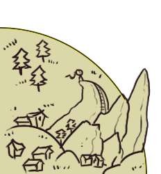
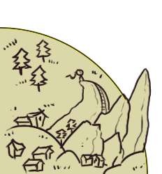

Oops! Toothless has become distracted by a butterfly. Typical.
Each section lights up when the butterfly flies into it. Help Toothless chase it down by repeating the sequence of the butterfly trail in the order shown. Each round gets more complicated though! Make it through 8 rounds and you win, good luck!
Each section lights up when the butterfly flies into it. Help Toothless chase it down by repeating the sequence of the butterfly trail in the order shown. Each round gets more complicated though! Make it through 8 rounds and you win, good luck!
Round: 0